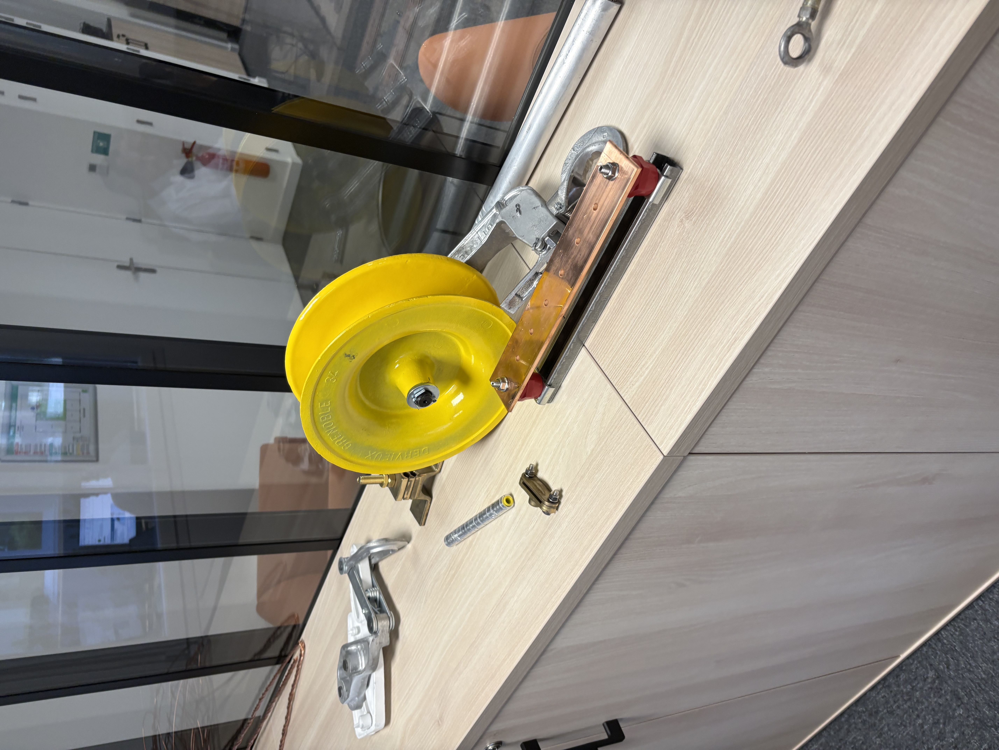

Réseau électrique
Conception, construction et maintenance des réseaux électriques, lignes aériennes comprises.
Électrification & modernisation du réseau — Sénégal
De la ligne aérienne à la prise de terre, Penta Sénégal conçoit, installe et entretient les infrastructures électriques et télécoms qui font tenir le réseau, poteau après poteau.
Notre histoire
Penta Sénégal s'inscrit dans la continuité de Retis Solutions, qui accompagne depuis l'origine le développement de l'électricité en Afrique. Dès la création de notre unité dédiée, une évidence s'est imposée : s'installer durablement sur le territoire pour faire grandir tout un écosystème, plutôt que d'intervenir de manière ponctuelle.
Depuis 4 ans, notre équipe est implantée au Sénégal et accompagne les projets d'électrification et de modernisation du réseau, aux côtés des exploitants, des collectivités et des industriels.
N'hésitez pas à prendre contact avec nos équipes pour vos projets et vos besoins de dépannage.
Parler à l'équipe
Domaines de compétence
Conception, construction et maintenance des réseaux électriques, lignes aériennes comprises.
Étude et réalisation de prises de terre pour sécuriser les installations et les personnes.
Paratonnerres, parafoudres et mise en conformité pour protéger équipements et bâtiments.
Travaux de soudure industrielle pour l'assemblage et la réparation de structures métalliques.
Installations dédiées : météo, militaire et autres réseaux de communication critiques.
Disponibilité
Aperçu indicatif de nos stocks. Pour une disponibilité précise ou une commande, contactez directement notre équipe.
Sur le terrain
Contact
Nouveau chantier, modernisation ou dépannage : notre équipe basée au Sénégal vous répond rapidement.